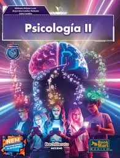

Psicología II 🧠
"Explorando el laberinto de la mente"
💭 Propósito Central:
En este curso, nos sumergiremos en el fascinante mundo de los procesos cognitivos. Queremos que entiendas cómo tu cerebro percibe, atiende y recuerda información, para que puedas mejorar tus estilos de aprendizaje y dominar tus habilidades metacognitivas. ¡Aprender a aprender es el superpoder definitivo!
En este curso, nos sumergiremos en el fascinante mundo de los procesos cognitivos. Queremos que entiendas cómo tu cerebro percibe, atiende y recuerda información, para que puedas mejorar tus estilos de aprendizaje y dominar tus habilidades metacognitivas. ¡Aprender a aprender es el superpoder definitivo!
📈 Progresión 1: Procesos Cognitivos Básicos
Aprenderemos cómo la percepción nos engaña, cómo la atención nos enfoca y cómo la memoria guarda nuestros tesoros más preciados.
📈 Progresión 2: Procesos Superiores
Analizamos el pensamiento complejo, la magia del lenguaje y los diferentes tipos de inteligencia que poseemos.
📈 Progresión 3: Estilos de Aprendizaje
Es momento de reflexionar: ¿Cómo aprendes tú? Identificamos estrategias personalizadas para potenciar tu rendimiento académico.

Mtra. Bertha Gabriela Piña
Guía de Procesos Mentales
"Conocerse a uno mismo es el inicio de toda sabiduría."Percepción
Atención
Memoria
Inteligencia
Metacognición
Lenguaje
Pensamiento
Neurociencia